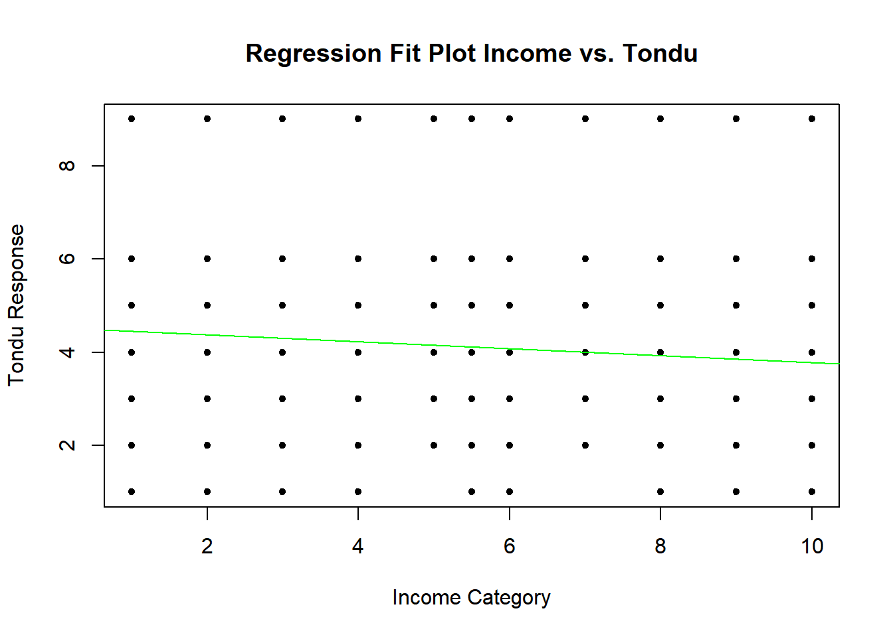

# Load necessary libraries in a single line
library(haven) # For reading Stata data filesWarning: package 'haven' was built under R version 4.3.2library(MASS) # For ordinal logistic regressionWarning: package 'MASS' was built under R version 4.3.2library(vcd) # For categorical dataWarning: package 'vcd' was built under R version 4.3.2Loading required package: gridlibrary(ggplot2)
library(tidyr)
library(grid)
library(dplyr)
Attaching package: 'dplyr'The following object is masked from 'package:MASS':
selectThe following objects are masked from 'package:stats':
filter, lagThe following objects are masked from 'package:base':
intersect, setdiff, setequal, union# Read the dataset and define variables in fewer lines
TEDS_2016 <- read_stata("https://github.com/datageneration/home/blob/master/DataProgramming/data/TEDS_2016.dta?raw=true")
variables <- c("Tondu", "age", "income", "edu")
# Loop for missing values, factor conversion, and checking levels consolidated
for (var in variables) {
missing_count <- sum(is.na(TEDS_2016[[var]]))
cat(var, "has", missing_count, "missing values\n")
}Tondu has 0 missing values
age has 0 missing values
income has 0 missing values
edu has 10 missing valuesTEDS_2016 <- within(TEDS_2016, {
age_factor <- cut(age, breaks = c(19, 29, 39, 49, 59, Inf), labels = c("20-29",
"30-39",
"40-49",
"50-59",
"Above 60"), right = TRUE)
income_factor <- factor(income, levels = c("1", "2", "3", "4", "5", "6", "7", "8", "9", "10", "5.5"),
labels = c("Under 28,000",
"28,001-39,000",
"39,001-49,000",
"49,001-59,000",
"59,001-69,000",
"69,001-80,000",
"80,001-93,000",
"93,001-111,000",
"111,001-141,000",
"Over 141,001",
"Other/Unknown"))
edu_factor <- factor(edu, levels = c(1, 2, 3, 4, 5, 9), labels = c("Below elementary school",
"Junior high school",
"Senior high school",
"College",
"Above university",
"Nonresponse"))
Tondu_factor <- factor(Tondu, levels = c(1, 2, 3, 4, 5, 6, 9), labels = c("Immediate unification",
"Maintain the status quo, move toward unification",
"Maintain the status quo, decide either unification or independence",
"Maintain the status quo forever",
"Maintain the status quo, move toward independence",
"Immediate independence",
"Nonresponse"))
})
# Binary and numerical columns imputation consolidated
binary_columns <- sapply(TEDS_2016, function(x) all(x %in% c(0, 1, NA)))
TEDS_2016[, binary_columns] <- lapply(TEDS_2016[, binary_columns], function(x) {
factor(x, levels = c(0, 1))
})
numerical_columns <- sapply(TEDS_2016, is.numeric) & !binary_columns
TEDS_2016[, numerical_columns] <- lapply(TEDS_2016[, numerical_columns], function(x) {
ifelse(is.na(x), mean(x, na.rm = TRUE), x)
})
categorical_columns <- sapply(TEDS_2016, is.factor)
TEDS_2016[, categorical_columns] <- lapply(TEDS_2016[, categorical_columns], function(x) {
mode_value <- names(which.max(table(x)))
factor(ifelse(is.na(x), mode_value, x), levels = levels(x))
})
regplot <- function(x, y, title, xlab = "X", ylab = "Y") {
fit <- lm(y ~ x)
plot(x, y, main = paste("Regression Fit Plot", title), xlab = xlab, ylab = ylab, pch = 20)
abline(fit, col = "green")
}
# Regression plot function usage consolidated
TEDS_2016$Tondu_numeric <- as.numeric(as.character(TEDS_2016$Tondu))
regplot(TEDS_2016$age, TEDS_2016$Tondu_numeric, "Age vs. Tondu", xlab = "Age", ylab = "Tondu Response")regplot(TEDS_2016$edu, TEDS_2016$Tondu_numeric, "Education vs. Tondu", xlab = "Education Level", ylab = "Tondu Response")regplot(TEDS_2016$income, TEDS_2016$Tondu_numeric, "Income vs. Tondu", xlab = "Income Category", ylab = "Tondu Response")
# Ordinal logistic regression and plotting consolidated
pred_data_age <- data.frame(age_factor = levels(TEDS_2016$age_factor))